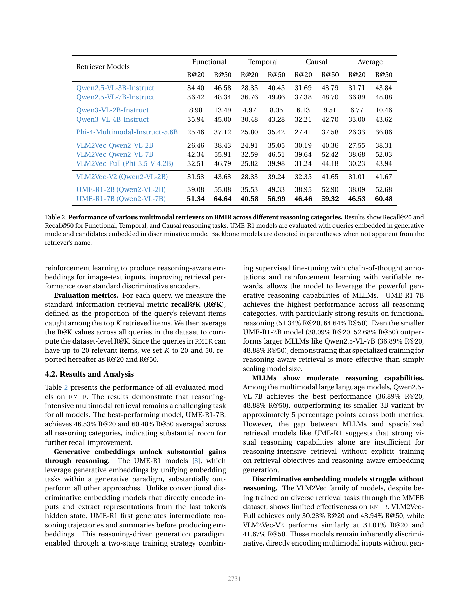

一句话结论
RMIR把图像检索扩展到功能、时序和因果意图，但自动构造的“推理”标签不等于已排除捷径；公开训练/测试共享850个源图路径，使后续微调实验必须补来源隔离，而不能直接沿用原划分宣称跨图泛化。[1][4]
问题定义
输入“参考图像+问题”，从共享图库找回符合意图的图像。例如看见工具/场景后推断其用途、下一状态或成因，而不是照着caption找相似图。论文目标为日常1–2步推断；静态图像的时间常识不等于动态视频推理，也不是交互式多轮检索。[1]（§1、3）
方法概述
- Visual Genome/Open Images v7的2,018,175图经SigLIP2聚类，50,000簇每簇抽10图形成500,000种子池。[1]（§3.1）
- Claude Sonnet4.5生成query和目标描述，并过滤多模态依赖、复杂性、特异性；SigLIP2图像索引top16加Qwen3文本索引top4召回候选。[1]（§3.1.1–3）
- 一次Sonnet和四次Haiku判断triplet，置信度不足1的相关候选图按规则剔除。共享池含高置信判正与判负候选，不是只收集正例。[1][4]（§3.1.4–6；
create_candidate_images_pool_for_retrieval） - 测试集可靠性分数（Test Set Reliability, TSR）强调检索列表后部的负项；高TSR进测试，其余进训练。作者没有用该训练集训练主表模型，训练收益被列为后续工作。[1]（§3.1.7、5）
核心实验与结果
正式测试1,634 queries：功能546、时序432、因果656；训练6,687；共享池35,803图。Recall@K为每query命中正例数/已标正例总数，再对query平均，不是“至少命中一个就算成功”。[1]（§3.2、4.1）
| 模型 | R@20 | R@50 | 证据边界 |
|---|---|---|---|
| UME-R1-7B（Qwen2-VL） | 46.53 | 60.48 | query生成式、candidate判别式 |
| VLM2Vec-Qwen2-VL-7B | 38.68 | 52.03 | 与UME同底座，但训练配方不同 |
| Qwen2.5-VL-7B-Instruct | 36.89 | 48.88 | 不同底座与训练，非受控推理消融 |
Table2支持所测系统的性能差异，不能把7.85个百分点净归因为思维链（Chain of Thought, CoT）。UME-R1的功能/时序/因果R@20为51.34/40.58/46.46；整体均值按query而非三类等权计算。[1]

正文“功能对所有模型最易、时序对所有模型最难”的概括有例外：Qwen2.5-VL-7B三类R@20为36.42/36.76/37.38，功能反而最低。宜保留为最佳模型的观察，不复述成全模型规律。[1]（Table2、§4.2）
公开数据与实现核验
固定作者仓库 95edf4c72c9ef2c0dad408993715e8eb70d0badd；本地audit.py与audit-results.json保留可复查过程。这是数据身份与函数审计，不是GPU模型或榜单复现。[4]
- 测试1,634行对应1,472个源图路径，训练6,687行对应4,389个；共享850个路径，涉及896个测试query（54.83%）。qid与精确(图路径,文本)对均无交集；不能把共享源图误说成同一query重复。[4]
- 测试正/负triplet 3,134/6,866，训练35,070/6,835；35,803候选ID与正负候选并集相等，正例无池外ID。当前测试最多12个正例，与构造最多20候选不矛盾。[4]
- 正式脚本使用TSR阈值0.497及
binary_tsr=False，不是函数默认的二值模式；通过cosine<0.4筛选候选后补负项到16。[4] - 对已审阅的两个TSR函数运行五条合成断言：空的筛选后列表得1.0；一个正项加15个人工负项得0.99609375，均越过阈值。此处只证明补齐可能影响可靠性分数，没有估计真实数据中发生率。[4]
解释边界：共享图像证明发布划分并非source-disjoint，对使用该训练集做微调的后续研究很重要；论文没有做这种微调，故不能据此宣布原主表训练泄漏。未下载原图做近重复检测，路径之外的重叠仍未知。
局限或疑问
- 候选召回限定标签范围：只对初始两种索引返回候选作判断，未召回的正确图像可能被漏标。TSR补充实验仅用150个query的前15项预测第16项；均值差0.27和p=2.38×10^-11不等于全库没有假负例。[1][2]（§3.1.7、B.2）
- 同源评审：生成、过滤和五票判断属于Claude家族。200个triplet人审一致率81%（100正/100负）没有完整评审人数、复评一致性和混淆矩阵；不能外推为全库81%标签正确率，更不是完备性证明。[2]（B.1）
- 捷径仍未实测：缺text-only/image-only、同数据同预算推理消融、异构judge替换及源图隔离重评。提示词要求不等于已通过实验。[1]（§5）
- 成本缺账：论文没有API调用总量、费用、GPU-hours、索引大小和在线P95延迟；仓库虽给ml.g5.24xlarge及四GPU命令，仍不足证明“自动化=低成本”。[1][4]
- 许可与版本：代码Apache2.0、数据CC BY-NC4.0，原图另取原来源；不将代码许可当图像授权。无多seed/置信区间，预训练图像重叠未知。[1][4]
对当前 Wiki 判断的影响
topics/image-text-retrieval应把压力测试的难度与测量有效性分开。claims/claim-image-text-retrieval-compositionality既不从标准Recall推断理解，也不从“推理benchmark低分”直接推断一般因果能力缺失。
后续先固定标签版本、按源图/近重复簇隔离，补单模态基线和异构人审多真值；之后才比较同底座同数据的推理开关。若改进仅在原TSR划分成立，则收窄为协议内收益。
原始材料
本地raw/ingest/2026-09-21-rmir/保存官方HTML、PDF/全文、补充PDF/全文、独立analysis、固定SHA代码与JSONL、审计脚本/结果及原页预览。原始PDF/代码/数据不随公开站发布，仅发布本文和原页预览。
Sources
[1] https://openaccess.thecvf.com/content/CVPR2026/papers/Li_RMIR_A_Benchmark_Dataset_for_Reasoning-Intensive_Multimodal_Image_Retrieval_CVPR_2026_paper.pdf
[2] https://openaccess.thecvf.com/content/CVPR2026/supplemental/Li_RMIR_A_Benchmark_CVPR_2026_supplemental.pdf
[3] https://openaccess.thecvf.com/content/CVPR2026/html/Li_RMIR_A_Benchmark_Dataset_for_Reasoning-Intensive_Multimodal_Image_Retrieval_CVPR_2026_paper.html
[4] https://github.com/amazon-science/rmir/tree/95edf4c72c9ef2c0dad408993715e8eb70d0badd